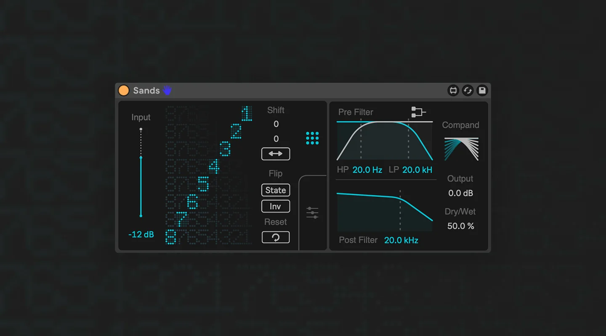
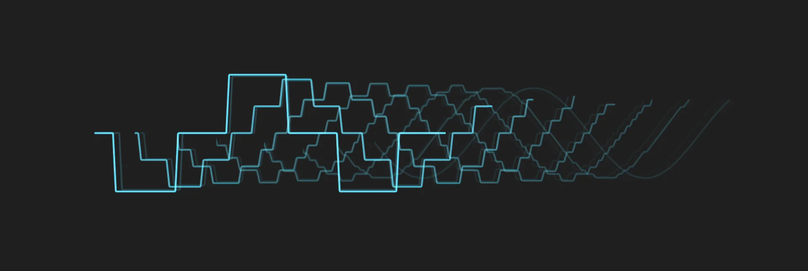
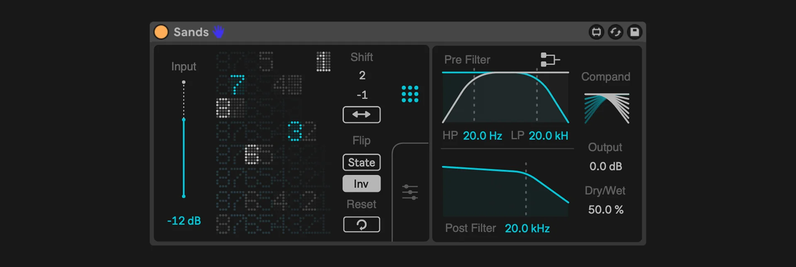

Sands is a Max For Live Device for reshaping your sound by simulating and then abusing old digital sampler
technology.
Modeling the digital to analogue, and the analogue to digital converter of an 8-bit sampler, Sands scrambles, skips,
and inverts each bit to introduce mind-numbing violence to your signal.
Claw sine waves apart, bellow up the noise floor, or shred drum loops into pieces.

Samplers or any digital processor take analog audio in and convert that analog information into digital information
called bits.
More bits allows us to make measurements of amplitude — from the quietest signal just above the noise floor, to the
loudest signal just before clipping.
1-bit gives us two different measurements, 2-bit gives us four measurements, 3-bit gives us eight. Each bit doubling
the number of measurements.
8-bits gives us 256 different measurements of a signals amplitude.
Do nothing, and Sands can be used as a way to add a subtle noise floor.

Sands bit-matrix is your cockpit — allowing the patching of individual bits to the wrong places.
Move bit-1 to the position of bit-8. Now the noise floor screams in your face.
Move bit-6 to the position of bit-2, now it sounds a bit like FM.
Move bit-3 to to the position of bit-4, bit-1 to the position of bit-7, turn off bit-2, and invert bit-6. Now it sounds
like a robot punching you in the face.
Sands matrix modifiers allow easy shifting of entire columns and rows.
Most samplers from the 80s used filters to prevent aliasing, a reconstruction error from digital back to analogue
audio.
Sands too employs a modeled filter that starts as a high shelf filter, morphs into something resembling a band pass
filter, and then at the bottom of the range, becomes a high shelf filter again.
Sands and Unfolds is co-developed by Dr. Ryan Page and Takuma Matsui.
Minimum Requirements:
Ableton Live 10, 11 & 12 Suite or Standard with Max for Live installed.